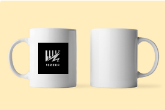

MUG

Détail :
Mug en céramique imprimé en France d'une contenance de 350ml. Vous ne pourrez bientôt plus vous passer de ce joli mug robuste avec une anse large, parfaite pour boire du thé ou du café tout au long de la journée.
- Passe au lave-vaisselle
- Impression anti-rayures et anti-UV
Conseil : laver votre tasse à la main prolonge la durée de vie du design imprimé.
Prix : 15€